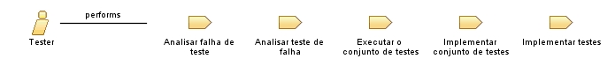

| Role: Tester |
 |
|
Relationships
 |
||
| Primary Performs | ||
|---|---|---|
| Modifies |
|
|
Staffing
| Skills | Os conjuntos de conhecimentos e habilidades podem variar dependendo dos tipos de testes sendo executados e das fases do ciclo de vida do projeto, no entanto, em geral, a equipe que preenche a função do Testador deve ter as seguintes habilidades:
Quando testes automatizados são necessários, essas habilidades devem ser consideradas além daquelas já mencionadas acima:
|
|---|